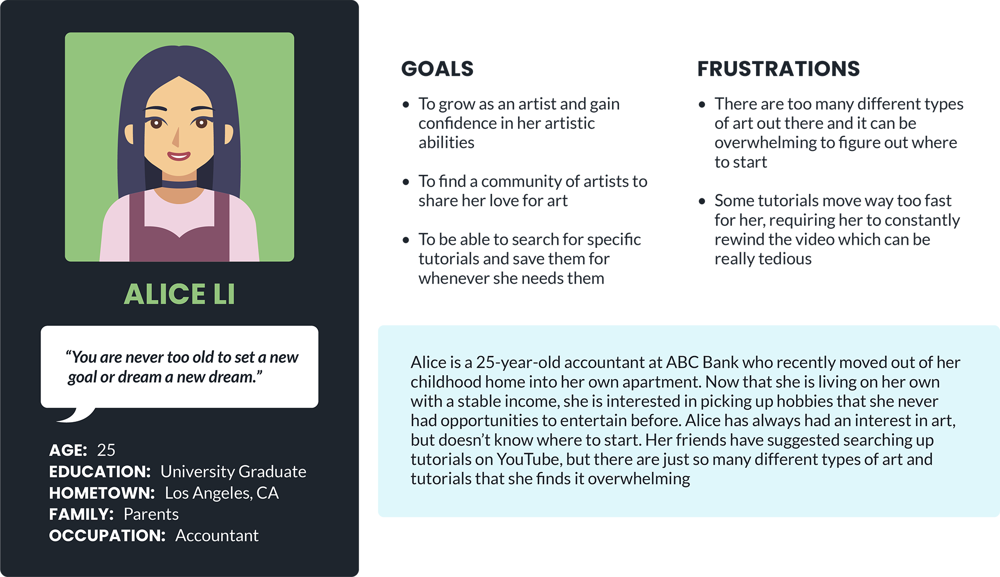
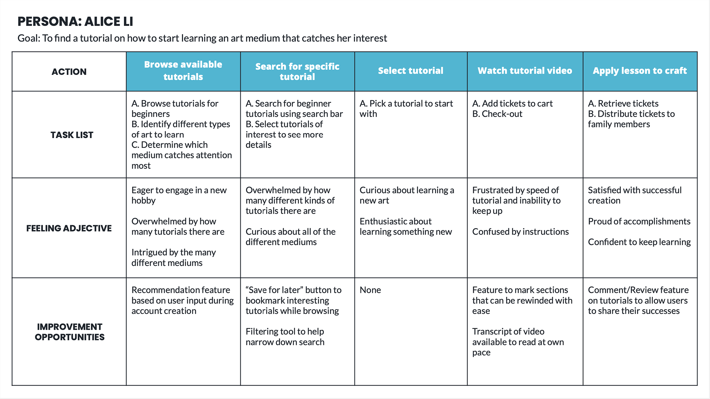
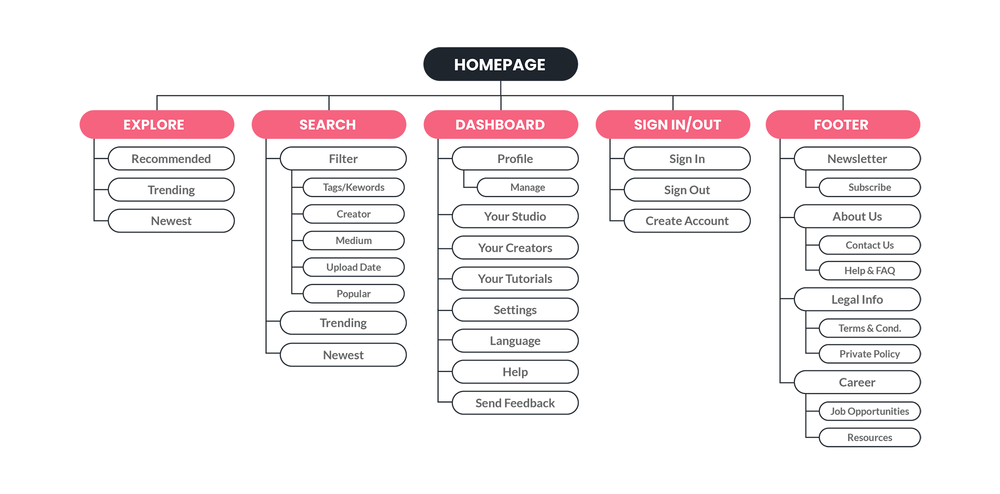
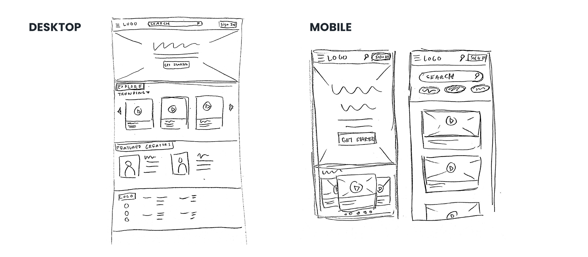
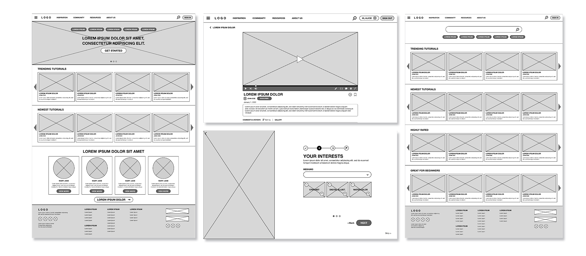
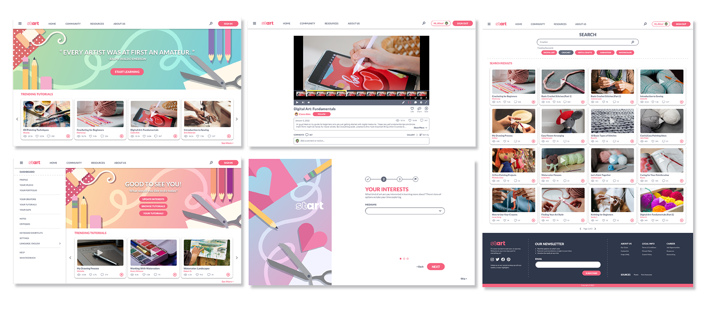
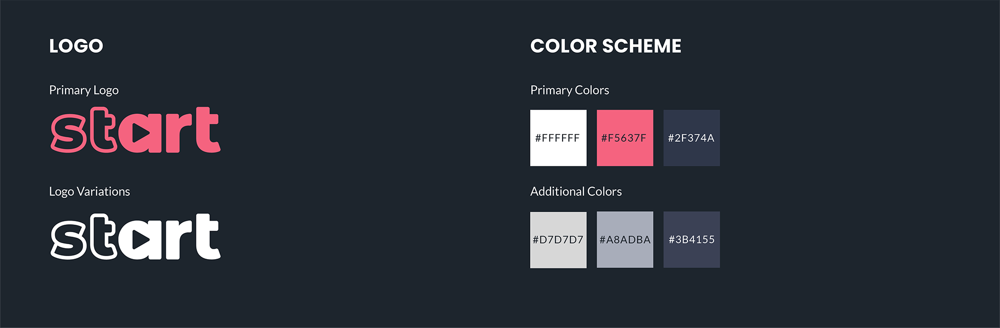
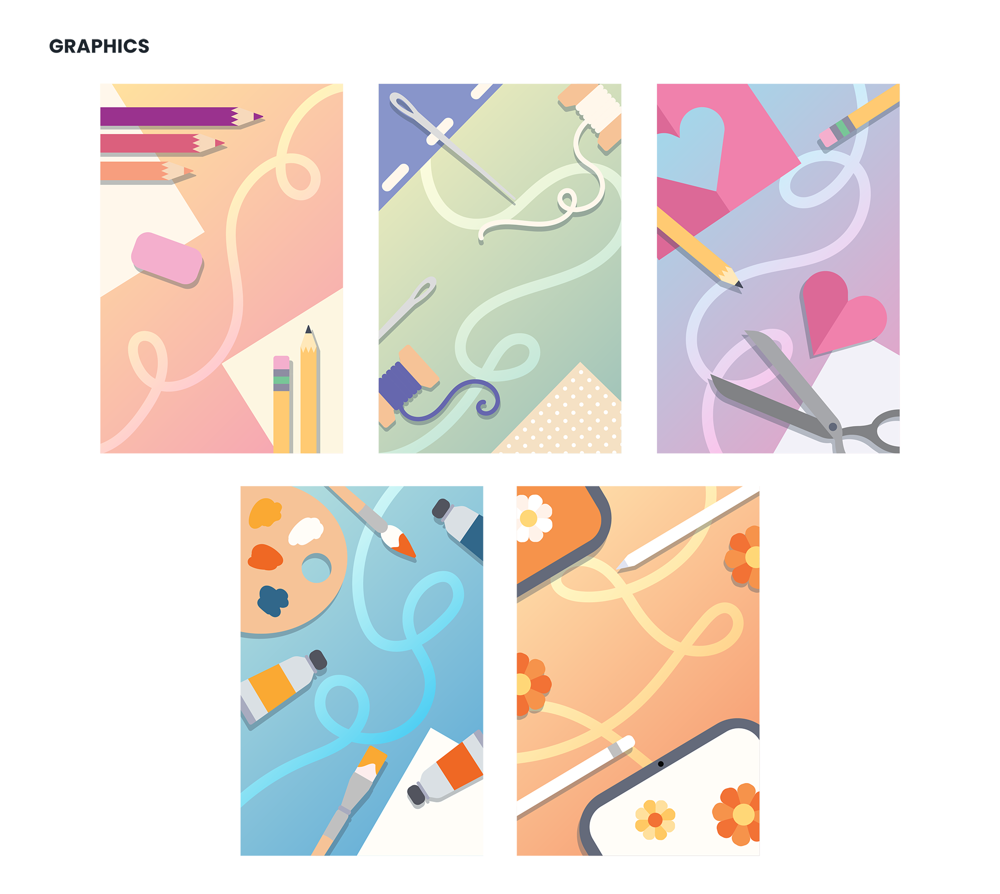

Project Overview
The Product
Start is a website that is dedicated to giving artists and future artists a place to learn and grow together.
My Role
UI/UX Designer and Researcher
Project duration
November 2022 - January 2023
Tools
Adobe XD, Adobe Illustrator, Adobe Photoshop
The Problem
Artists constantly have to compete with other creators on existing media platforms. Websites like Youtube have a lot of wonderful resources for beginning artists to pick up a craft, but there’s so much content about anything and everything that it can be a lot to sift through.
The Goal
Start aims to be a place where all artists, no matter what skill level, can learn and be a part of a community that loves art.
Research
Research Summary
In order to better understand the users that I’m designing for, I created empathy maps and conducted online research to get a better idea of how the experience of viewing and learning from online art tutorials can be improved.
As an artist myself, I found it easy to empathize and identify struggles that aspiring artists encounter when learning from online tutorials.
Paint Point: Organization
Other websites that are capable of hosting tutorial videos tend host all types of content as well which can be overwhelming.
Pain Point: Experience
Tutorials can move too quickly for some learners which can cause frustration.
Pain Point: Time
It can take a lot of trial and error to find a tutorial that works well for a user.
Personas
Alice Li is an accountant and aspiring artist who needs a website where she can learn more about art mediums she enjoys and become a part of a supportive art oriented community because she wants to learn in a way that’s best suited to her.
User Journey Map
Mapping Alice’s user journey revealed how a website like Start would help improve Alice’s experience with online art tutorials.
Sketches & Wireframes
Site Map
Before starting to work on the website's sketches and wireframes, I created a sitemap to lay out the website's structural architecture to get a better idea of its overall navigation.
Ideation
During this process, I drafted iterations of the home screen as well as other screens of key features that I would like to include in my design and was able to get a better idea of how I might go about addressing user pain points.
Wireframes
One of Start's primary goals is to provide easily accessible resources for learning about art, so I wanted the homepage to have tutorials front and center for a new user to view.
As for the community aspect, I thought that a section highlighting creators and their work on a weekly basis would show Start's dedication to creating a community for artists.
Since it can be overwhelming for new artists to figure out what they want to start with on a site with so many different kinds of tutorials, I decided to include sections in the Account Creation process that gauge a new user's interest. And using this information, the site can recommend relevant tutorials to the user, cutting down on time needed to find a suitable tutorial.
This information can also be updated at any time once the user's account is created.
Low-Fidelity Prototype
Upon completing the necessary screens for basic navigation on desktop, I linked the screens together to create a low-fidelity prototype. The primary user flow in this lo-fi prototype is for the user to go through the Account Creation process, input their interests, and browse through some basic site features.
 View Lo-Fi PrototypeFinal Designs
Mockups
In this stage of the project, I began refining my design and considering the visual aspects of Start. The high fidelity prototype of the desktop version of my website fleshes out some accessibility features more, most notably a feature that allows users to clip sections of tutorial videos that can be automatically repeated or saved for later reference..
Design Elements
 
Conclusions
Impact
Start gives art enthusiasts a way to learn from and connect with each other while prioritizing the user’s learning experience.
Takeaways
I learned that when designing a website, it can be easy to get distracted by all of the different features that one can come up with. It is important to keep a user-centered mindset and to focus on features that are actually going to benefit users.